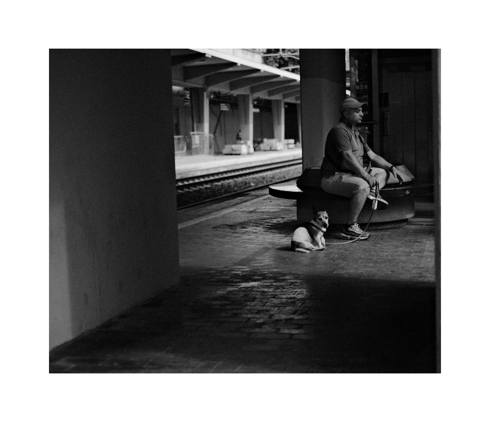
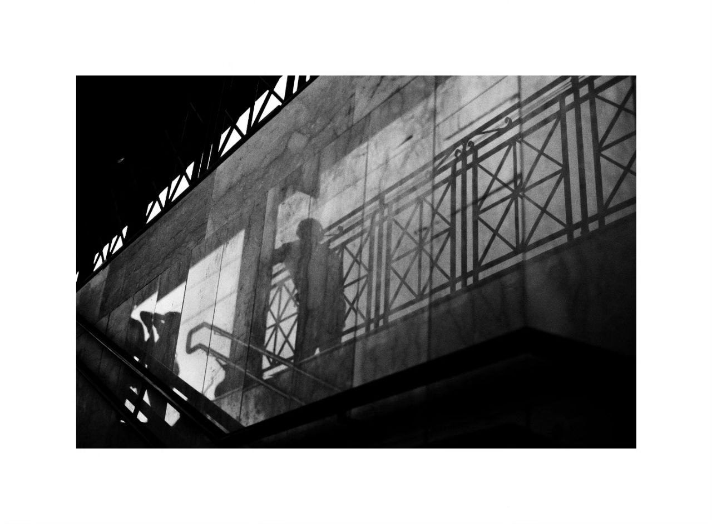

Questo è un luogo che amo fotografare. Si tratta di un piccolo lunapark vicino casa. Conosco questo luogo da una vita, ma mostra come mediante la fotografia ciò che cambia è il punto di vista sul quotidiano. Si fotografa ciò che non si vuole perdere.
Spesso faccio da pendolare, anzi lo faccio ormai da molti anni, precisamente da quando andavo al Liceo. In attesa di un treno o di corsa per non perderlo, il mio tempo si ferma.
 